Получить практические навыки установки операционной системы на
виртуальную машину
Научиться настраивать минимально необходимые сервисы для дальнейшей
работы
Теоретическая справка
Установка ОС Linux
Основные этапы: - Создание виртуальной машины - Настройка параметров
оборудования - Установка дистрибутива - Первоначальная настройка системы
- Установка дополнительного ПО
Скачивание виртуальной машины
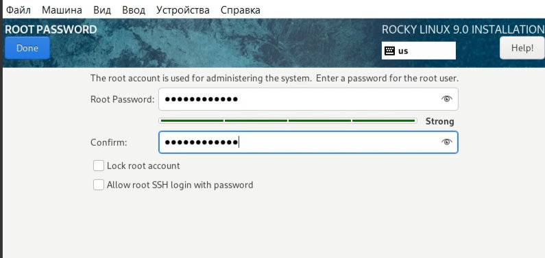
Рис. 1. Скачивание виртуальной машины
Rocky
Скачивание дистрибутива Linux Rocky
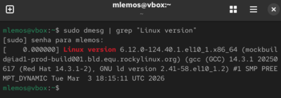
Рис. 2. Скачивание дистрибутива Linux
Rocky. Установка Linux версии Red Hat на виртуальную машину
Установка Linux версии Red Hat (64-bit)
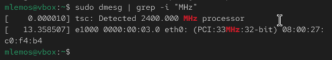
Рис. 3. Установка Linux версии Red Hat
(64-bit). Указание объёма памяти
Указание объёма памяти
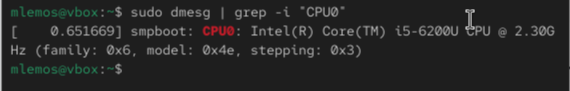
Рис. 4. Указание объёма памяти. Жесткий
диск
Создание нового виртуального жёсткого диска
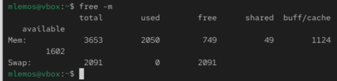
Рис. 5. Создание нового виртуального
жёсткого диска. Указание типа
Указание типа VDI
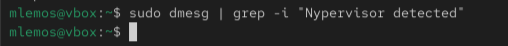
Рис. 6. Указание типа VDI (VirtualBox
Disk Image). Указание формата хранения
Указание формата хранения
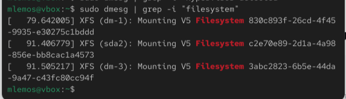
Рис. 7. Указание формата хранения. Размер
и имя файла
Указание имени и размера файла
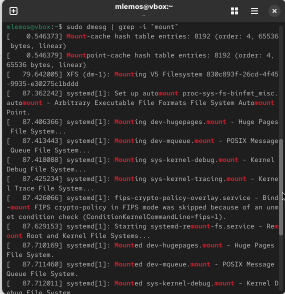
Рис. 8. Указание имени и размера файла.
Носители
Добавление оптического привода Rocky
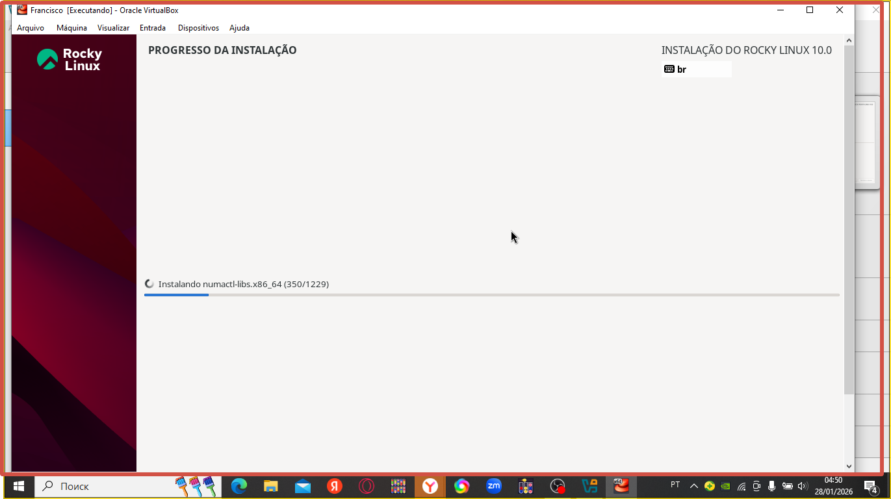
Рис. 9. Добавление оптического привода
Rocky. Запуск виртуальной машины
Запуск виртуальной машины
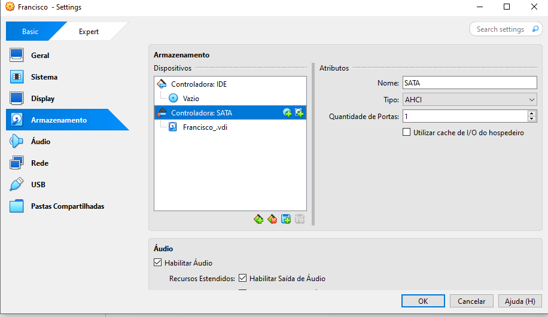
Рис. 10. Запуск виртуальной машины.
Установка Rocky Linux 9.0
Установка Rocky Linux 9.0
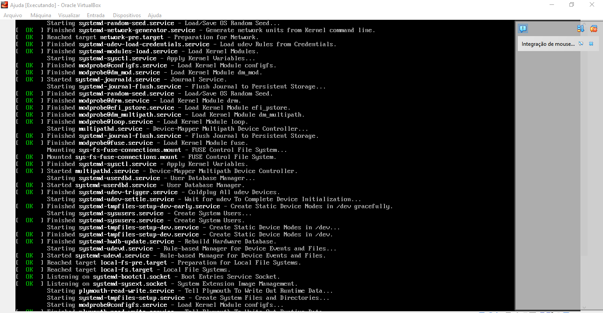
Рис. 11. Установка Rocky Linux 9.0.
Настройки установки операционной системы
Настройки установки операционной системы
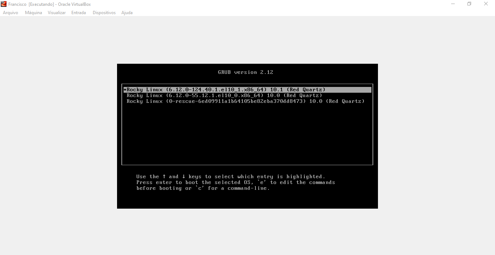
Рис. 12. Настройки установки операционной
системы. Выбор языка и региона
Место установки и выбор программ
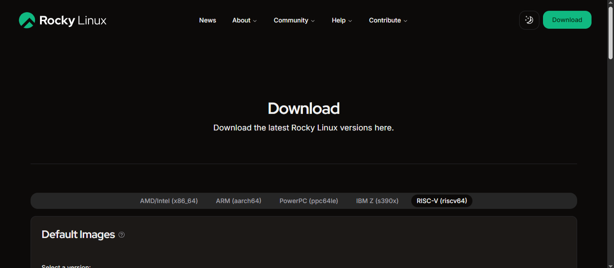
Рис. 13. Место установки. Выбор программ
и настройка разделов
Отключение KDUMP и настройка сети
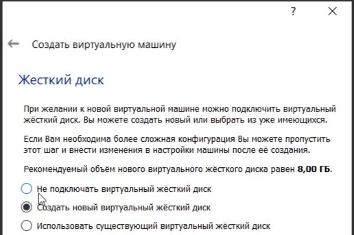
Рис. 14. Отключение KDUMP. Сеть и имя
узла
Установка пароля для root
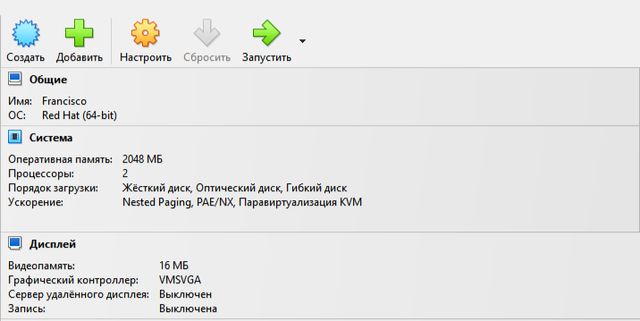
Рис. 15. Установка пароля для root.
Создание пользователя
Процесс установки системы
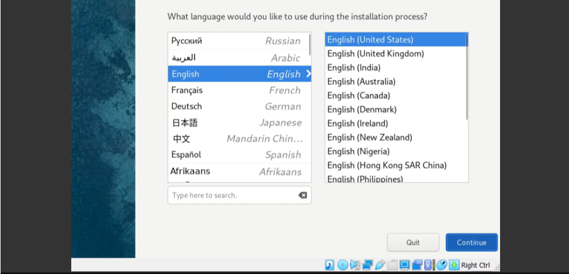
Рис. 16. Процесс установки операционной
системы
Завершение установки и первый запуск
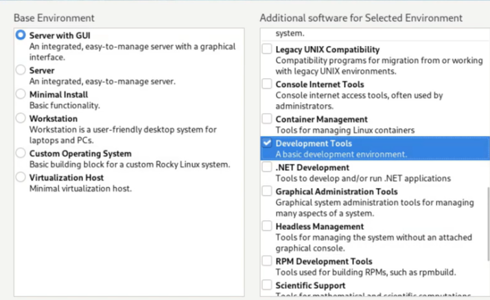
Рис. 17. Завершение установки и первый
запуск системы
Вывод
В ходе выполнения лабораторной работы были приобретены практические
навыки установки операционной системы на виртуальную машину и настройки
минимально необходимых для дальнейшей работы сервисов.
Список литературы
[1] Документация Rocky Linux: https://docs.rockylinux.org [2]
Руководство по установке VirtualBox